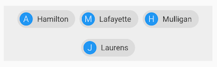

4.5 流式布局（Wrap、Flow）
在介绍 Row 和 Column 时，如果子 widget 超出屏幕范围，则会报溢出错误，如：
Row(
children: <Widget>[
Text("xxx"*100)
],
);
运行效果如图4-14所示：

可以看到，右边溢出部分报错。这是因为Row默认只有一行，如果超出屏幕不会折行。我们把超出屏幕显示范围会自动折行的布局称为流式布局。Flutter中通过Wrap和Flow来支持流式布局，将上例中的 Row 换成Wrap后溢出部分则会自动折行，下面我们分别介绍Wrap和Flow.
4.5.1 Wrap
下面是Wrap的定义:
Wrap({
...
this.direction = Axis.horizontal,
this.alignment = WrapAlignment.start,
this.spacing = 0.0,
this.runAlignment = WrapAlignment.start,
this.runSpacing = 0.0,
this.crossAxisAlignment = WrapCrossAlignment.start,
this.textDirection,
this.verticalDirection = VerticalDirection.down,
List<Widget> children = const <Widget>[],
})
我们可以看到Wrap的很多属性在Row（包括Flex和Column）中也有，如direction、crossAxisAlignment、textDirection、verticalDirection等，这些参数意义是相同的，我们不再重复介绍，读者可以查阅前面介绍Row的部分。读者可以认为Wrap和Flex（包括Row和Column）除了超出显示范围后Wrap会折行外，其他行为基本相同。下面我们看一下Wrap特有的几个属性：
spacing：主轴方向子widget的间距runSpacing：纵轴方向的间距runAlignment：纵轴方向的对齐方式
下面看一个示例子：
Wrap(
spacing: 8.0, // 主轴(水平)方向间距
runSpacing: 4.0, // 纵轴（垂直）方向间距
alignment: WrapAlignment.center, //沿主轴方向居中
children: <Widget>[
Chip(
avatar: CircleAvatar(backgroundColor: Colors.blue, child: Text('A')),
label: Text('Hamilton'),
),
Chip(
avatar: CircleAvatar(backgroundColor: Colors.blue, child: Text('M')),
label: Text('Lafayette'),
),
Chip(
avatar: CircleAvatar(backgroundColor: Colors.blue, child: Text('H')),
label: Text('Mulligan'),
),
Chip(
avatar: CircleAvatar(backgroundColor: Colors.blue, child: Text('J')),
label: Text('Laurens'),
),
],
)
运行效果如图4-15所示：

4.5.2 Flow
我们一般很少会使用Flow，因为其过于复杂，需要自己实现子 widget 的位置转换，在很多场景下首先要考虑的是Wrap是否满足需求。Flow主要用于一些需要自定义布局策略或性能要求较高(如动画中)的场景。Flow有如下优点：
- 性能好；
Flow是一个对子组件尺寸以及位置调整非常高效的控件，Flow用转换矩阵在对子组件进行位置调整的时候进行了优化：在Flow定位过后，如果子组件的尺寸或者位置发生了变化，在FlowDelegate中的paintChildren()方法中调用context.paintChild进行重绘，而context.paintChild在重绘时使用了转换矩阵，并没有实际调整组件位置。 - 灵活；由于我们需要自己实现
FlowDelegate的paintChildren()方法，所以我们需要自己计算每一个组件的位置，因此，可以自定义布局策略。
缺点：
- 使用复杂。
- Flow 不能自适应子组件大小，必须通过指定父容器大小或实现
TestFlowDelegate的getSize返回固定大小。
示例：
我们对六个色块进行自定义流式布局：
Flow(
delegate: TestFlowDelegate(margin: EdgeInsets.all(10.0)),
children: <Widget>[
Container(width: 80.0, height:80.0, color: Colors.red,),
Container(width: 80.0, height:80.0, color: Colors.green,),
Container(width: 80.0, height:80.0, color: Colors.blue,),
Container(width: 80.0, height:80.0, color: Colors.yellow,),
Container(width: 80.0, height:80.0, color: Colors.brown,),
Container(width: 80.0, height:80.0, color: Colors.purple,),
],
)
实现TestFlowDelegate:
class TestFlowDelegate extends FlowDelegate {
EdgeInsets margin;
TestFlowDelegate({this.margin = EdgeInsets.zero});
double width = 0;
double height = 0;
@override
void paintChildren(FlowPaintingContext context) {
var x = margin.left;
var y = margin.top;
//计算每一个子widget的位置
for (int i = 0; i < context.childCount; i++) {
var w = context.getChildSize(i)!.width + x + margin.right;
if (w < context.size.width) {
context.paintChild(i, transform: Matrix4.translationValues(x, y, 0.0));
x = w + margin.left;
} else {
x = margin.left;
y += context.getChildSize(i)!.height + margin.top + margin.bottom;
//绘制子widget(有优化)
context.paintChild(i, transform: Matrix4.translationValues(x, y, 0.0));
x += context.getChildSize(i)!.width + margin.left + margin.right;
}
}
}
@override
Size getSize(BoxConstraints constraints) {
// 指定Flow的大小，简单起见我们让宽度尽可能大，但高度指定为200，
// 实际开发中我们需要根据子元素所占用的具体宽高来设置Flow大小
return Size(double.infinity, 200.0);
}
@override
bool shouldRepaint(FlowDelegate oldDelegate) {
return oldDelegate != this;
}
}
运行效果见图4-16：

可以看到我们主要的任务就是实现paintChildren，它的主要任务是确定每个子widget位置。由于Flow不能自适应子widget的大小，我们通过在getSize返回一个固定大小来指定Flow的大小。
注意，如果我们需要自定义布局策略，一般首选的方式是通过直接继承RenderObject，然后通过重写 performLayout 的方式实现，具体方式我们会在本书后面14.4 布局（Layout）一节中举例说明。